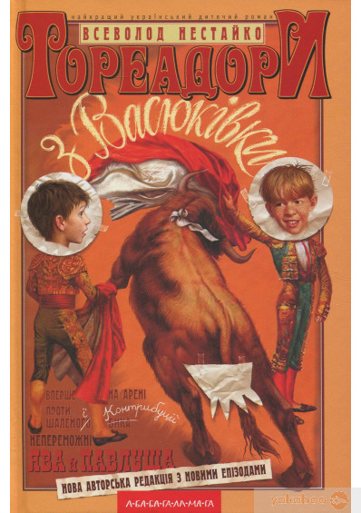
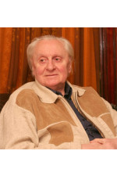

Тореадори з Васюківки
Про книжку Тореадори з Васюківки
Культовий твір, який увійшов до переліку золотої класики української літератури. Книга відзначена у «Почесному списку Андерсена» і перекладена двадцятьма мовами. Завдяки чудовому вмінню автора створювати гумористичні історії серія веселих оповідань часом доводить читачів до нестримного сміху. Книга Всеволода Нестайка «Тореадори з Васюківки» хоч і створювалася з розрахунком на дитячу та юнацьку аудиторію, але будь-яка доросла людина, ознайомившись зі змістом пригодницьких історій, прийде у захват і зарядиться відмінним настроєм.
Характеристики
- Автор - Всеволод Нестайко
- Видавництво - А-ба-ба-га-ла-ма-га
- Мова - Українська
- Рік видання - 2013
- Рік першого видання - 1973
- Вік - підліткам, від 9 до 12 років
- Під редакцією - Іван Малкович
- Ілюстратор - Анатолій Василенко
Всеволод Нестайко
Тореадори з Васюківки
ТОРЕАДОРИ З ВАСЮКІВКИ
ТРИЛОГІЯ ПРО ПРИГОДИ ДВОХ ДРУЗІВ
Подається за старим виданням
ЧАСТИНА ПЕРША
Яку розсказує Павлуша Завгородній. НАДЗВИЧАЙНІ ПРИГОДИ РОБІНЗОНА КУКУРУЗО ТА ЙОГО ВІРНОГО ДРУГА І ОДНОКЛАСНИКА ПАВЛУШІ ЗАВГОРОДНЬОГО В ШКОЛІ, ДОМА ТА НА БЕЗЛЮДНОМУ ОСТРОВІ ПОБЛИЗУ СЕЛА ВАСЮКІВКИ
РОЗДІЛ I.
Метро під свинарником. Тореадори з Васюківки. Собакевич.
— От знайдибіда, авантюрист шмаркатий! Ванько-о-о! Вилазь зараз же! Бо такого втру маку — тиждень
чухатимешся! Вилазь, чуєш!
Ми лежимо в густих бур'янах за клунею, уткнувшись у землю носами, й не дихаємо.
— Вилазь, убоїще, бо гірше буде! Ти ж мене знаєш!
— Знаю, знаю, — ледь чутно зітхає, мій друг і нарешті наважується подати голос.
— Діду! — жалібно озивається він.
— Давай—давай!
— Діду, — ще жалібніше повторює мій друг, — ви одійдіть за хату, ми виліземо. Бо ж ви битиметесь.
— Вони ще мені умови ставлять, вишкварки! Ану вилазьте!
— Та ми ж не хотіли. Ми ж хотіли метро. Таке, як у Києві.
— Я вам дам метра! Я вам такого метра дам, що…
— Ми ж не знали. Ми зараз усе закидаємо — нічого й видно не буде. Одійдіть, діду.
Довго ще тривають переговори. Нарешті дід востаннє лайнувся, закашлявся, плюнув і почовгав за хату.
Ми вилазимо з бур'янів.
Біля свинарника нас зустрічає гундосим рохканням п'ятипудова льоха Манюня, противна й плямиста, як географічна карта.
У-у, скотиняка! Щоб ти… Це через неї ми вскочили в халепу.
У нас була прекрасна, благородна ідея — провести під свинарником метро. Це мало бути сюрпризом! Перша лінія метро у Васюківці! Станція "Клуня" — станція "Крива груша". Три копійки в один кінець. Родичі безплатно. З учительки арифметики — п'ять копійок.
Ми вже підкопалися майже до половини свинарника, і раптом непередбачена катастрофа! — клята льоха Манюня провалилася в наше метро. Провалитися вона зуміла, а от вилізти—дзуськи! I зняла такий вереск, що причовгав дід. Ну і…
Проте діда не видно. І поки ми працюємо (а справа це довга й нудна), я вас познайомлю з моїм другом. [...] Ява — це мій найкращий друзяка і напарник. Ява Рень.[...]
У них взагалі вся сім'я інтересна.
Батько на скрипці грає. Корова — Контрибуція називається. А дід (ви уже з ним знайомі) — мисливець завзятий, на полюванні, коли стріляє, ліве око онучею зав'язує. Бо в нього ліве око без правого не примружується. Як ліве примружить — праве саме заплющується. Але ж і б'є дід Варава з тою онучею, ох же ж і б'є!
Городські мисливці, що "Волгами" з Києва приїжджають, тільки ахають.
"Ви, дєдушка, абсолютний чемпіон", — кажуть.
[...]
І Ява весь час вигадував різні штуки-викаблуки заради нашої слави.
Отож ми з ним піймали в лісі пугутькало і випустили в клубі під час лекції на тему "Виховання дітей у
сім'ї". Лектор упав з трибуни і вилив собі на голову графин з водою.
А старі дідові підштаники на телевізійну антену над клубом, думаєте, хто повісив? Ми, звичайно.
А то якось влітку Ява сказав:
— Давай влаштуємо бій биків.
— Га? — не відразу второпав я.
— Ти пам'ятаєш, ми в клубі закордонне кіно дивилися "Тореадор"?
— Ага… То й що?
— Пам'ятаєш, на арені розлючений бик, а тут дядько у капелюсі, з гинджалом, перед ним танцює.
— Так-так-так…
— А потім — рраз! Бик — беркиць! І оплески.
— Ага. Здорово… Але це ж убивати треба. Хто ж нам дозволить убивати поголів'я?
— Тю, дурний! Убивати! Що це тобі — м'ясозаготівля, чи що. Це ж видовище. На стадіоні. Вроді футбола.
Головне тут —
красиво вимахувати червоною плахтою і ловко вивертатися, щоб рогом не зачепило. Ти ж бачив. Тореадори —
це найсміливіші
герої і ловкачі. Головне тут — тренування і спритність. Розумієш? Уперше в історії Васюківки — бій биків.
Тореадор Іван
Рень і тореадор Павло Завгородній! Гості з'їжджаються з усієї України. Трансляція по радіо і по
телевізору. Навіть у
Жмеринці видно буде.
Ми повмощувались зручніше і почали обговорювати подробиці. Насамперед — бик. Кандидатура колгоспного бугая Петьки була відхилена одразу. То таке страшнюче мурмило, що його навіть сам зоотехнік Іван Свиридович боїться. Очі — наче тракторні фари. Землю гребе ногами, як екскаватор.
Цього літа один дачник мало не вмер з переляку. Лежав на вигоні голий—голісінький — загоряв. Голова під парасолькою, все інше на сонці. І раптом — Петька. Дачник як рвоне. Бугай за ним. Дачник товстий, з черевцем. Бачить — не втече. А тут телеграфний стовп на дорозі. Як той дачник на стовп видряпався — досі невідомо. Але факт — півдня загоряв на ізоляторах, тримаючись за дроти, аж поки не під'їхав комбайнер Микола на комбайні і не зняв його. Дачник штани надів і одразу на станцію: додому їхать.
Другою кандидатурою був цап Жора. Це я його кандидатуру висунув, щоб помститися. Дуже мені противний був цап Жора, бо з'їв мою сорочку, коли я у калабані купався.
Але Ява мене не підтримав.
— Ні, — сказав він, — Жора дуже балакучий. Весь час мекекече. Ми й оплесків не почуємо. І йдеться про бій
биків, а не цапів. Треба, щоб було щось бичаче, коров'яче щось — велике і крутороге.
[...]
Наступного ранку ми зустрілися на шляху, що вів до вигону. Я гнав Маньку, Ява — Контрибуцію. Корови плентались, легковажно метляючи хвостами, і не підозрювали, який це історичний день.
По дорозі ми ще вирізали з ліщини дві прекрасні шпаги. Ми були в повній бойовій готовності.
[...]
Ми йшли і співали арію Хозе з опери Бізе "Кармен", яку багато разів чули по радіо.
Торе-гадор, сміле-ге-е в бой, торе-гадор, торе-гадор…
Там ждет тебя-га любовь, там ждет тебя-га-га любовь.
Ми співали і не знали, що нас жде.
Небо було синє-синє — справжнє іспанське небо.
Погода — саме підходяща для бою биків.
Ми погнали корів аж на край вигону, туди, де ставок, — далі від людських очей.
— Оджени свою Маньку вбік, щоб не заважала, — сказав Ява, — і давай починати.
Я не став сперечатись. Тим більше, Манька у нас дуже нервова, їй краще не бачити бою биків.
Ява поправив на голові капелюшка, підтягнув штани, взяв мого килимка і, витанцьовуючи, навшпиньках став
під ходити до
Контрибуції.
[...]